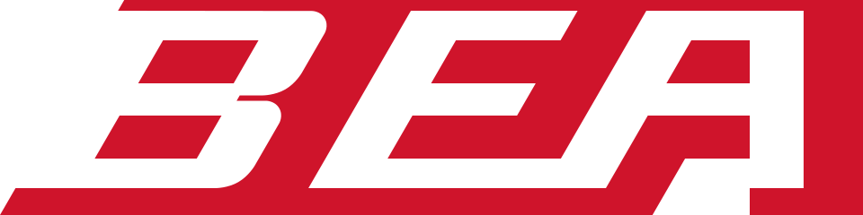

BEA
BEA(British European Airways, 영국유럽항공)는 영국의 단거리 국적 항공사였다. 1946년 국유화로 출범했으며 경쟁이 심화된 1960년대 후반, 코퍼레이트 아이덴티티의 선구자 FHK 헨리온(FHK Henrion)이 자신의 회사 헨리온 디자인 어소시에이츠를 통해 1967년 새 아이덴티티를 개발해 1968년 도입했다. BEA는 1974년 BOAC와 합병해 브리티시 에어웨이스가 됐다.
최종 업데이트

BEA는 어떤 브랜드인가
BEA(British European Airways, 영국유럽항공)는 영국의 단거리 국적 항공사였다. 1946년 국유화로 출범했으며 경쟁이 심화된 1960년대 후반, 코퍼레이트 아이덴티티의 선구자 FHK 헨리온(FHK Henrion)이 자신의 회사 헨리온 디자인 어소시에이츠를 통해 1967년 새 아이덴티티를 개발해 1968년 도입했다.
BEA는 1974년 BOAC와 합병해 브리티시 에어웨이스가 됐다.
BEA는 어떻게 봐야 할까
디자인 아카이브 맥락에서 BEA 아이덴티티는 헨리온 디자인 어소시에이츠가 1967~1968년 완성한 유럽 코퍼레이트 아이덴티티의 교과서적 사례다. 핵심 결정은 영국 국기(유니언 잭)를 기체 도장의 주요 인시그니아로 끌어올린 것으로, 깃발을 항공기 날개 앞전과 동일한 각도로 잘라 속도감과 전진성을 부여했다.
국적기를 라이버리의 중심 모티프로 삼은 항공사가 사실상 없던 시기였기에 이 접근은 독창적이었다. 헨리온은 로고, 레드 컬러, 기체·차량·건물 도장을 하나의 체계로 묶어 일관성을 강제했고, 이는 1960년대 유럽에서 형성되던 통합 아이덴티티 사고를 항공 분야에 본격 이식한 작업으로 평가된다.
BEA는 어떻게 시작되고 성장했나
BEA(British European Airways)는 1946년 출범한 영국의 국영 유럽·국내선 항공사다. 1959년경 메리 드 솔(Mary de Saulles)이 설계한 초기 아이덴티티는 흰 수직 꼬리날개에 붉은 사각형과 날개 단 BEA 마크를 넣은 이른바 레드 스퀘어(Red Square) 도장으로 자리잡았으나, 1960년대 후반 항공·기업 전반의 경쟁 수준이 높아지고 실루엣 항공기 심벌이 시대에 뒤떨어진다는 판단이 커지면서 전면 개편이 추진됐다.
이에 유럽 코퍼레이트 아이덴티티의 선구자로 꼽히던 FHK 헨리온(Frederick Henri Kay Henrion)과 그의 스튜디오 헨리온 디자인 어소시에이츠가 1967~1968년 새 통합 CI를 맡았다. 독일 뉘른베르크 태생으로 파리를 거쳐 영국에 정착한 헨리온은 KLM, 블루 서클, 브리티시 레이랜드 등의 아이덴티티로 명성을 쌓은 인물이다.
BEA의 브랜드 아이덴티티는 무엇인가
헨리온은 영국 국기 유니언잭의 요소를 수직 꼬리날개의 각도에 맞춰 잘라낸 'Speedjack'으로 재조형해 속도와 현대성을 표현했다. 항공기 도장에 국가 국기를 인시그니아로 쓴 항공사가 거의 없었다는 점에서 독창적이었다.
이는 1956년 메리 드 솔이 만든 붉은 사각형(red square) 아이덴티티를 대체한 것으로, 헨리온은 이전의 붉은 날개는 유지하되 로고타입을 더 가로로 길고 운동감 있게 재설계했다. 승인 후에는 항공기·차량·건물 전반에 일관 적용하기 위한 두 권 분량의 디자인 매뉴얼이 제작됐다.
헨리온은 이런 매뉴얼 기반 CI 실무를 영국에 정착시킨 선구자였다.
BEA의 대표 제품과 서비스는 무엇인가
헨리온이 설계한 BEA 시스템은 로고와 레드 컬러를 축으로 기체 라이버리, 화물·서비스 차량(로리), 공항 건물과 사인까지 아우르는 통합 적용을 목표로 했다. 프로그램 승인 후에는 적용을 통제하기 위해 두 권짜리 상세 디자인 매뉴얼이 제작됐고, 항공기 100여 대, 차량 1천여 대, 유럽 전역 건물 183곳이 새 체계로 교체됐다.
BEA는 누가 만들고 이끌었나
BEA는 지금 어떤 상태인가
1971년 BEA 회장은 영국왕립예술협회(RSA) 디자인 매니지먼트 대통령상 수상 자리에서 회사의 성공이 헨리온의 디자인 개념에 크게 빚졌다고 밝혔다. BEA 자체는 1974년 4월 1일 BOAC와 합병해 브리티시 에어웨이즈(British Airways)로 통합되며 독립 법인으로서의 역사를 마감했다.
BEA 연혁 — 주요 사건은 언제였나
BEA 로고는 어떻게 변해왔나
자주 묻는 질문
BEA는 어느 나라 브랜드인가요?
BEA는 영국의 기술·전자 브랜드입니다.
BEA는 언제 설립되었나요?
BEA는 1967년 설립되었습니다.
BEA의 브랜드 아이덴티티는 무엇인가요?
헨리온은 영국 국기 유니언잭의 요소를 수직 꼬리날개의 각도에 맞춰 잘라낸 'Speedjack'으로 재조형해 속도와 현대성을 표현했다.
BEA의 대표 제품은 무엇인가요?
헨리온이 설계한 BEA 시스템은 로고와 레드 컬러를 축으로 기체 라이버리, 화물·서비스 차량(로리), 공항 건물과 사인까지 아우르는 통합 적용을 목표로 했다.
BEA는 현재 어떤 상태인가요?
1971년 BEA 회장은 영국왕립예술협회(RSA) 디자인 매니지먼트 대통령상 수상 자리에서 회사의 성공이 헨리온의 디자인 개념에 크게 빚졌다고 밝혔다.
BEA의 브랜드 아이덴티티는 누가 디자인했나요?
BEA의 아이덴티티 디자인은 FHK Henrion가 맡은 것으로 기록되어 있습니다.
출처와 검증
브랜드명은 한글과 원어를 함께 표기하되 데이터에 없는 표기는 만들지 않습니다. 기원 국가·설립연도는 검수된 정의문에서 확인된 값을 우선하고, 없을 때만 공식 웹사이트 URL이 일치하는 위키데이터 개체의 값을 씁니다.